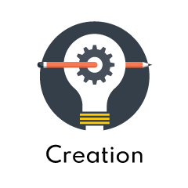

Himitsu Lab serves to help teams ideate, incubate and accelerate disruptive digital solutions.
The steps we follow to build new business are:
Ideation, Discovery, Validation, Creation and Scalable.
Technology innovations tend to be often created without any specific application in mind.
The Ideation stage is where we evaluate the potential use cases for a technology innovation.
Where can it be used? To whom do we believe great value can be delivered? We evaluate multiple
potential use cases with the goal of finding one strong business thesis: a statement defining what our product is, who our customer is, and why they will buy.
Discovery stage is about directly talking to prospective customers and learning about their problems and needs.
In this stage, we usually don’t talk about the innovation or technology upfront during the interviews. Our focus is to learn and not to “pitch” to avoid any biased discussions tilting towards a technology. We use an open style communication to discover where the true pains are in the market, and observe if our hypotheses match up with actual customer experience.
After such interviews, we have either a good understanding of problem statement and a compelling business model, or we go back to the whiteboard and start making changes.
In this stage, we build our first functional prototypes and test our sales process by doing a
Proof of Concept (PoC). The idea is to test PoC so that customers trials and evaluate so that we know
they may buy on success of the PoC. If we cannot prove the success of PoC, we then need to revalidate our business model and go back to the Ideation stage.

Once we have a deep understanding of our customers and a successful PoC, our focus shifts to build a
base solution with minimum required features for marketability. We attempt to get an early adopter to actually pay for our product or service.
If we can on-board several customers, we will have proven our business model is repeatable. Once
this has been done, not once but several times, we know this can be a commercial model to raise funding and to spin off as a new start-up company.
This stage is all about scaling the start-up business and raise first round of venture capital. The intent
is to build out a complete management team and start focusing on execution of a now proven business model.